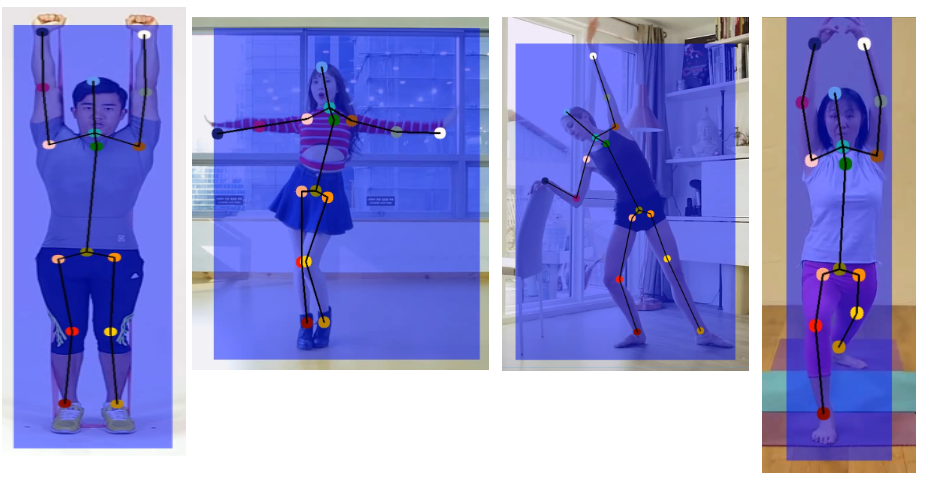

Object Detection and Tracking
1 Object Detection
Figure 1. SSD Structure
In our use cases, we only need to detect a single class of object—humans. Since humans typically appear in easily detectable areas, our detection task is straightforward and can be efficiently handled with a simple structure. To optimize processing time, we use VGG16 as the backbone for PC solutions and MobileNet for mobile solutions. Additionally, we employ six detection heads to capture humans at different scales.
The main challenge in our detection task is use-case specific. For open source datasets, they contain one big bounding box for crowds of humans. and they do not address the detection of partially occluded individuals effectively. In general object detection, bounding boxes are tightly wrapped around objects to achieve higher mAP scores. However, this tight wrapping can miss extended limbs that fall outside the box. Consequently, a significant portion of our work focuses on data preprocessing to improve detection accuracy in these cases.
Figure 1. crowd annotation example in COCO
Figure 2. artifact cases in general object detection models
Based on the issues we identified, we have implemented the following solutions:
- Partial Human Body Training: We randomly crop or mask out image areas based on the person ground truth bounding box locations to focus only on partial human bodies during training.
- Bounding Box Validation: We use Top-Down pose estimation solutions, such as OpenPose, to establish new bounding boxes. These are then compared with the ground truth bounding boxes. If their IoU is below a certain threshold, we mark these as problematic ground truth labels and exclude them.
- Crowd Label Filtering: While the COCO dataset includes an iscrowd label for filtering crowd labels, some datasets lack this metadata. During preprocessing, we filter out bounding boxes where more than one person’s bounding box is contained within the current bounding box.
After data preprocessing, we trained our VGG-based model and MobileNet-based model with the filtered dataset. We observed the following improvements:

Figure 3. Improvements after data preprocessing
For Table 1 results, We tested only with the "person" label and set the IoU threshold to 0.85.
Table 1.
3 Object Tracking V1.0 -- OD+ReID
In our cases, multi-person tracking presents two main challenges:
- Trajectory Variability: Unlike general object tracking, where objects usually move in a consistent direction, our use cases involve a lot of dancing, where dancers frequently switch places and follow unstable trajectories.
- Visual Similarity: Tracking multiple objects of the same type is challenging, especially in dancing videos where individuals may look alike or wear similar uniforms.
Our initial approach involved using object detection combined with re-identification to address the task.
Fugure 4. MP V1.0 pipeline
As illustrated in the flowchart above, our pipeline consists of four major steps:
- Object Detection
- Re-Identification
- New Features Fusion (based on the results of Steps 1 and 2)
- Track Status Update
3.1 Re-Identification
We use ResNeXt50 as the backbone for our model. Additionally, we incorporated self-attention layers within the ResNeXt architecture to enhance accuracy, as appearance information should be considered in a global context. The structure is depicted in Figure 5.
fFor the loss function, we use a combination of CrossEntropyLoss, WeightedTripletLoss, and CenterLoss to train our model. Our training datasets include CUHK02, DukeMTMC-VID, iLIDS-VID, LPW, Market1501, MARS, MOT15, MOT17-20, and PRID2011.
WeightedTripletLoss emphasizes more on difficult or incorrect predictions, while CenterLoss helps to compact the embedding space for the same class. TripletLoss ensures that embeddings for different classes are pushed further apart.
 Fugure 5. Re-ID Structure
Fugure 5. Re-ID Structure
 Fugure 6. The self-attention block in the CNN model
Fugure 6. The self-attention block in the CNN model
3.2 Feature Fusion
We combine two similarity scores: the Intersection over Union (IoU) score and the appearance embedding similarity score, as depicted in Figure 4.
3.3 Tracks Statue Update Logics
Here are the steps for track updating after we obtain the fused similarity score:
- Assign New Bounding Boxes: Use Non-Maximum Suppression (NMS) and a pre-set threshold to assign new bounding boxes and appearance embeddings to existing active tracks.
- Update Track Status: Keep the active status of tracks that have been updated and change the status of tracks that did not get updated to inactive.
- Handle Unassigned Bounding Boxes: For bounding boxes that remain unassigned, apply NMS and thresholding to inactive tracks. Any updated inactive tracks will be moved back to the active pool.
- Create New Tracks: For any remaining unassigned bounding boxes, create new tracks to store them. This logic also applies to the first frame.
- Postprocessing (Offline Scenarios): In offline scenarios, perform additional postprocessing to delete tracks that appear for only a few frames. Additionally, check for potential track merges based on criteria such as non-overlapping frames and high similarity scores.
Fugure 7. Track Object and its attributes
Fugure 8. offline postprocessing pipeline
3.4 Result
3.5 Comparison with Baselines
We evaluated several baseline solutions before developing our own Re-ID model, including CLIP and FaceNet. As shown in the results below, both of these solutions exhibited a significant number of ID switching instances.
FaceNet result
CLIP result
4 Object Tracking V2.0 -- Segment Anything+Mask Predictor
Temporal segmentation is a well-studied area, but it faces a significant challenge: the mask often deforms and fails to cover the object completely over time. This issue typically results in either the mask vanishing or expanding excessively, leading to a long-tail problem.
SAM is ideal for addressing this issue through mask refinement. Additionally, we have pose estimation (PE) keypoint results that can be utilized by SAM to generate more accurate masks.
We use PE results to generate initial masks for the first frame with SAM, assigning IDs to each mask. For the second frame, we input the image and the previous masks generated by SAM into the Mask Predictor to generate the current masks. For subsequent frames, we continue using the Mask Predictor with the new image and predicted masks to generate updated masks. This process is repeated to produce masks for each ID across frames. To address mask drift, SAM refinement is applied, but to expedite processing, this refinement is performed every
ùëÅ
frames rather than every frame.
Segment tracking offers significant advantages in our use cases. For instance, in wrestling, where two individuals are highly entangled, a bounding box-based solution would face challenges. The overlapping bounding boxes would result in high Intersection over Union (IoU) scores and similarly high appearance embedding scores due to the significant overlap. Segment tracking inherently avoids this issue by providing more precise delineation of each individual, even in complex overlapping scenarios.
 Figure 10. Bounding boxes Versus Segmentations
Figure 10. Bounding boxes Versus Segmentations
In our example video, MP V1.0 encountered one ID-swapping issue, which was effectively resolved by MP V2.0. Additionally, we observed improvements in handling several challenging scenarios.
 Figure 11. MP V1.0 ID-swapping case
MP V2.0 result
Figure 11. MP V1.0 ID-swapping case
MP V2.0 result
5 Reference
Kirillov, A., Mintun, E., Ravi, N., Mao, H., Rolland, C., Gustafson, L., Xiao, T., Whitehead, S., Berg, A. C., Lo, W.-Y., Dollár, P., & Girshick, R. (2023a, April 5). Segment anything. arXiv.org. https://arxiv.org/abs/2304.02643
Xie, S., Girshick, R., Dollár, P., Tu, Z., & He, K. (2017, April 11). Aggregated residual transformations for deep neural networks. arXiv.org. https://arxiv.org/abs/1611.05431
Vaswani, A., Shazeer, N., Parmar, N., Uszkoreit, J., Jones, L., Gomez, A. N., Kaiser, L., & Polosukhin, I. (2023, August 2). Attention is all you need. arXiv.org. https://arxiv.org/abs/1706.03762
Liu, W., Anguelov, D., Erhan, D., Szegedy, C., Reed, S., Fu, C.-Y., & Berg, A. C. (2016, December 29). SSD: Single shot multibox detector. arXiv.org. https://arxiv.org/abs/1512.02325
Lin, T.-Y., Maire, M., Belongie, S., Bourdev, L., Girshick, R., Hays, J., Perona, P., Ramanan, D., Zitnick, C. L., & Dollár, P. (2015, February 21). Microsoft Coco: Common Objects in Context. arXiv.org. https://arxiv.org/abs/1405.0312
Held, D., Thrun, S., & Savarese, S. (2016, August 16). Learning to track at 100 fps with deep regression networks. arXiv.org. https://arxiv.org/abs/1604.01802
Bergmann, P., Meinhardt, T., & Leal-Taixe, L. (2019, August 17). Tracking without bells and whistles. arXiv.org. https://arxiv.org/abs/1903.05625